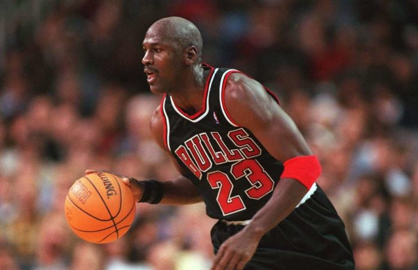
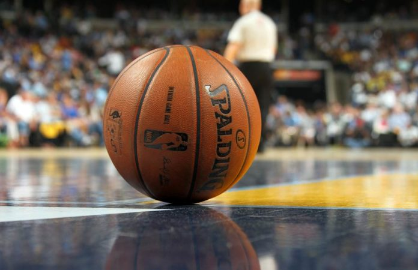
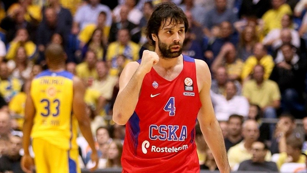
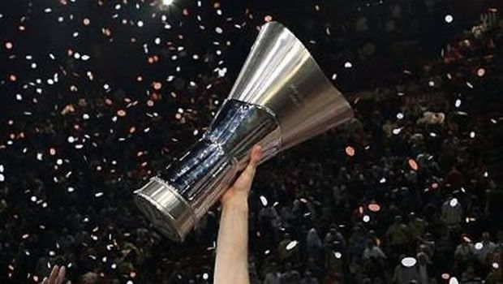
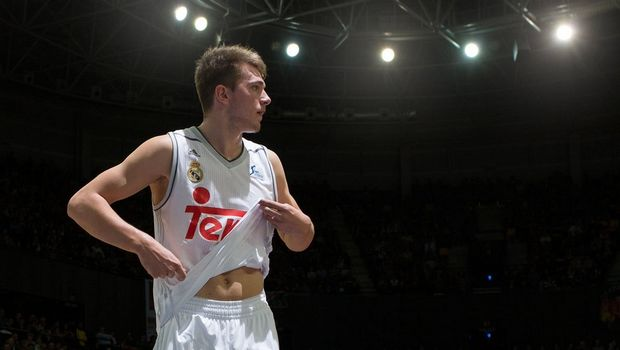
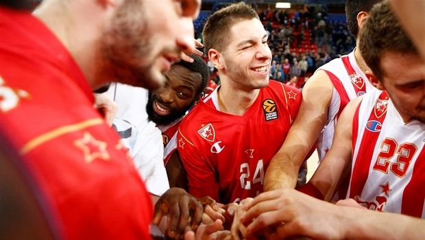

ΟΛΑ ΟΣΑ ΣΥΜΒΑΙΝΟΥΝ ΣΤΑ ΣΤΟ ΜΠΑΣΚΕΤ
Η ΡΟΗ ΤΩΝ ΕΙΔΗΣΕΩΝ

Από pick n roll 21/4/2017
Οι 5 κορυφαίοι σούτινγκ γκαρντ στην ιστορία του NBA.
Το Basketball Courts συνεχίζει τα αφιερώματα στους καλύτερους παίκτες όλων των εποχών και αυτή τη φορά είναι η σειρά των κορυφαίων σούτινγκ γκάρντ στην ιστορία της λίγκας. [Δείτε περισότερα...]

Από pick n roll 21/4/2017
Μπορεί αυτή τη στιγμή να θεωρείται ίσως ο καλύτερος από τη νέα γενιά προπονητών
του NBA, ωστόσο ο Μπραντ Στίβενς κατέχει μια αρνητική πρωτιά.Ο 40χρονος τεχνικός
των Μπόστον Σέλτικς έχει αυτή τη στιγμή το μικρότερο ποσοστό νικών μεταξύ των
head coaches που έχουν βρεθεί σε πάγκο ομάδας της λίγκας τουλάχιστον 10 φορές.
[Δείτε περισότερα...]

Από euroleague.com 21/4/2017
Σπουδαίο milestone από τον Μίλος Τεόντοσιτς.
Τρίτος σκόρερ στην ιστορία της EuroLeague έγινε το βράδυ της Τρίτης 18 Απριλίου ο Μίλος Τεόντοσιτς. Έτοιμος και για νέο milestone o 30χρονος Σέρβος της ΤΣΣΚΑ Μόσχας. [Δείτε περισότερα...]

Από euroleague.com 21/4/2017
Το 1957, οι ιθύνοντες της FIBA συναντήθηκαν στη Δυτική Γερμανία με αντικείμενο συζήτησης
την ανάγκη δημιουργίας μια νέας διασυλλογικής διοργάνωσης. Η ιδέα γεννήθηκε το προηγούμενο
καλοκαίρι με «οδηγό» το απόλυτα πετυχημένο πείραμα του Κυπέλλου Πρωταθλητριών, στο ποδόσφαιρο!
Ο Γενικός Γραμματέας της FIBA, Γουίλιαμ Τζόουνς ήταν..
[Δείτε περισότερα...]

Από euroleague.com 21/4/2017
Λούκα Ντόνσιτς: Κι όμως είναι ακόμη καλύτερος.
Ο Στέφανος Τριαντάφυλλος προσπαθεί να αποτυπώσει το μέγεθος του ταλέντου του Λούκα Ντόνσιτς, που είναι ακόμη καλύτερος από αυτό που νομίζουμε. Τα καλούπια των Μποντιρόγκα-Παπαλουκά, η σύγκριση με τα άλλα παιδιά-θαύματα, η ανάλυση του αγωνιστικού του προφίλ (GIFS, VIDEOS) και το συμπέρασμα ότι είναι μοναδικός. [Δείτε περισότερα...]

Από euroleague.com 21/4/2017